<!DOCTYPE html>
<html lang="ml">
<head>
  <meta charset="utf-8">
  <meta name="viewport" content="width=device-width, initial-scale=1.0">
  <title>Pages 41-60 - Class 7 Social science</title>
  <style>

:root {
  --bg-color: #fcfcfd;
  --card-bg: #ffffff;
  --text-color: #1e293b;
  --text-muted: #64748b;
  --primary-color: #0284c7;
  --primary-light: #e0f2fe;
  --border-color: #e2e8f0;
  --radius: 10px;
  --shadow: 0 4px 6px -1px rgb(0 0 0 / 0.05), 0 2px 4px -2px rgb(0 0 0 / 0.05);
}

body {
  font-family: -apple-system, BlinkMacSystemFont, "Segoe UI", Roboto, "Noto Sans Malayalam", "Manjari", "Gayathri", sans-serif;
  background-color: var(--bg-color);
  color: var(--text-color);
  line-height: 1.8;
  font-size: 1.1rem;
  margin: 0;
  padding: 0;
}

.container {
  max-width: 860px;
  margin: 0 auto;
  padding: 2.5rem 1.5rem 5rem 1.5rem;
}

header {
  margin-bottom: 2.5rem;
  padding-bottom: 1.5rem;
  border-bottom: 2px solid var(--border-color);
}

.badge-row {
  display: flex;
  gap: 0.5rem;
  margin-bottom: 0.75rem;
  flex-wrap: wrap;
}

.badge {
  display: inline-block;
  font-size: 0.75rem;
  font-weight: 700;
  text-transform: uppercase;
  letter-spacing: 0.05em;
  padding: 0.25rem 0.65rem;
  border-radius: 9999px;
  background: var(--primary-light);
  color: var(--primary-color);
}

.badge-medium {
  background: #fef3c7;
  color: #b45309;
}

.badge-class {
  background: #dcfce7;
  color: #15803d;
}

h1 {
  font-size: 2.1rem;
  font-weight: 800;
  margin: 0.5rem 0 1rem 0;
  line-height: 1.3;
  color: #0f172a;
}

.nav-bar {
  display: flex;
  justify-content: space-between;
  margin: 1.5rem 0;
  font-size: 0.95rem;
  flex-wrap: wrap;
  gap: 0.5rem;
}

.nav-bar a {
  color: var(--primary-color);
  text-decoration: none;
  font-weight: 600;
  padding: 0.5rem 1rem;
  border-radius: var(--radius);
  background: var(--card-bg);
  border: 1px solid var(--border-color);
  transition: all 0.2s ease;
}

.nav-bar a:hover {
  background: var(--primary-light);
  border-color: var(--primary-color);
}

.nav-bar .disabled {
  color: var(--text-muted);
  pointer-events: none;
  border-color: transparent;
  background: transparent;
}

.page-section {
  background: var(--card-bg);
  border: 1px solid var(--border-color);
  border-radius: var(--radius);
  box-shadow: var(--shadow);
  padding: 2rem;
  margin-bottom: 2.5rem;
}

.page-header {
  display: flex;
  align-items: center;
  justify-content: space-between;
  margin-bottom: 1.25rem;
  padding-bottom: 0.5rem;
  border-bottom: 1px dashed var(--border-color);
}

.page-number {
  font-size: 0.8rem;
  font-weight: 700;
  text-transform: uppercase;
  color: var(--text-muted);
  letter-spacing: 0.05em;
}

.page-content p {
  margin: 0 0 1.25rem 0;
  white-space: pre-wrap;
  word-break: break-word;
}

.page-content p:last-child {
  margin-bottom: 0;
}

.diagram-card {
  margin: 2rem 0;
  text-align: center;
  background: #f8fafc;
  border: 1px solid var(--border-color);
  border-radius: var(--radius);
  padding: 1rem;
  overflow: hidden;
}

.diagram-card img {
  max-width: 100%;
  height: auto;
  border-radius: calc(var(--radius) - 4px);
  display: inline-block;
  box-shadow: 0 2px 4px rgba(0,0,0,0.04);
}

.diagram-card figcaption {
  font-size: 0.85rem;
  color: var(--text-muted);
  margin-top: 0.75rem;
  font-weight: 500;
}

footer {
  margin-top: 3rem;
  padding-top: 2rem;
  border-top: 2px solid var(--border-color);
}

  </style>
</head>
<body>
  <div class="container">
    <header>
      <div class="badge-row">
        <span class="badge badge-class">Class 7</span>
        <span class="badge badge-medium">Malayalam Medium</span>
        <span class="badge">Social science</span>
        <span class="badge">Part 1</span>
      </div>
      <h1>Pages 41-60</h1>
      <div class="nav-bar"><a href="part_1_pages_2140.html">← Pages 21-40</a><a href="index.html">☰ Index</a><a href="part_1_pages_6180.html">Pages 61-80 →</a></div>
    </header>
    <main>
<section class="page-section" id="page-41">
  <div class="page-header"><span class="page-number">Page 41</span></div>
  <figure class="diagram-card" id="fig_ch03_p041_01"><figcaption>Figure fig_ch03_p041_01 (Page 41)</figcaption></figure>
  <figure class="diagram-card" id="fig_ch03_p041_02"><figcaption>Figure fig_ch03_p041_02 (Page 41)</figcaption></figure>
  <figure class="diagram-card" id="fig_ch03_p041_03"><figcaption>Figure fig_ch03_p041_03 (Page 41)</figcaption></figure>
  <figure class="diagram-card" id="fig_ch03_p041_04"><figcaption>Figure fig_ch03_p041_04 (Page 41)</figcaption></figure>
  <div class="page-content">
    <p>‹Žv}†“’›c“’›sšĞ›c<br>41<br>f÷—›ăhsš’§xƀš}s‘š§†ƣ¡}‹Žv}†š†›Åƣš¡Ĺ –Ǵš…œ†›ă‚§<br>‚š¡’ǫx›Ņc†›Žœä›ă§†›ā‘¡}†›uŒ†āÇ¢Žt¡ƀ}Ĺž<br>x›Ņc3.2<br>Œ‚<br>–­—šÅ„c<br>Œ‚<br>†›Ž¢ˆä‚<br>‚Dz‚<br>mƽš“Åڝc<br>–ǵš‚ũDzc<br>–š¢—š„ŽDzc<br>z†š…›ˆ‚Dzc<br>¢äŒ<br>Žšȹc<br>†œ‚›<br>z<br>“DZޛ–Ǵš‚ũDZś†§Ƃš…š†DZc†Æsc<br>z<br>ˆ­Žš“sš”āÇiƀšÚc<br>z<br>mƼšŒ‚āÇڝc‚DZƂš…š†DZc†Æsc<br>z<br>–šŒž—DZ†œ‚›iƀ“ŽĹc<br>z<br>z†š…›ˆ‚DZ‹Žc”Þ›¡ƀ}Ĺc<br>z<br>z<br>gŦDZÄ–Ǵš‚ũDZ–ŒŽŒš§†ƣ¡}‹Žv}†¡}e}›Ĺš›<br>Œš›‚§“››ŽĹs<br>‹Žv}†¡} ŒÄušŒ›<br>x›Ņc3.3<br>“1947fuǘ§15†§e¢Ƽ<br>†ŒÚ§–Ǵš‚ũDZcs›Ğ›‚§ ?<br>ˆ¢ä‹Žv}††›“›Æ<br>“ų‚§1950 z†“Ž›26†cÐ<br>Ïe¢ƀšÇ–Ǵš‚ũDZc<br>¢†}›ŽĬŽ“Å•¢Ĺš‘c<br>mŦš›ŽųgŦDZ¡}<br>‹Žv}†c<br>†›Œ“c?Ð<br>†›āÇڝŒ›¢ƼgŎ¡ŒšŽ –c”c ?</p>
  </div>
</section>
<section class="page-section" id="page-42">
  <div class="page-header"><span class="page-number">Page 42</span></div>
  <figure class="diagram-card" id="fig_ch03_p042_01"><figcaption>Figure fig_ch03_p042_01 (Page 42)</figcaption></figure>
  <figure class="diagram-card" id="fig_ch03_p042_02"><figcaption>Figure fig_ch03_p042_02 (Page 42)</figcaption></figure>
  <figure class="diagram-card" id="fig_ch03_p042_03"><figcaption>Figure fig_ch03_p042_03 (Page 42)</figcaption></figure>
  <figure class="diagram-card" id="fig_ch03_p042_04"><figcaption>Figure fig_ch03_p042_04 (Page 42)</figcaption></figure>
  <figure class="diagram-card" id="fig_ch03_p042_05"><figcaption>Figure fig_ch03_p042_05 (Page 42)</figcaption></figure>
  <figure class="diagram-card" id="fig_ch03_p042_06"><figcaption>Figure fig_ch03_p042_06 (Page 42)</figcaption></figure>
  <figure class="diagram-card" id="fig_ch03_p042_07"><figcaption>Figure fig_ch03_p042_07 (Page 42)</figcaption></figure>
  <figure class="diagram-card" id="fig_ch03_p042_08"><figcaption>Figure fig_ch03_p042_08 (Page 42)</figcaption></figure>
  <figure class="diagram-card" id="fig_ch03_p042_09"><figcaption>Figure fig_ch03_p042_09 (Page 42)</figcaption></figure>
  <figure class="diagram-card" id="fig_ch03_p042_10"><figcaption>Figure fig_ch03_p042_10 (Page 42)</figcaption></figure>
  <figure class="diagram-card" id="fig_ch03_p042_11"><figcaption>Figure fig_ch03_p042_11 (Page 42)</figcaption></figure>
  <figure class="diagram-card" id="fig_ch03_p042_13"><figcaption>Figure fig_ch03_p042_13 (Page 42)</figcaption></figure>
  <figure class="diagram-card" id="fig_ch03_p042_14"><figcaption>Figure fig_ch03_p042_14 (Page 42)</figcaption></figure>
  <figure class="diagram-card" id="fig_ch03_p042_15"><figcaption>Figure fig_ch03_p042_15 (Page 42)</figcaption></figure>
  <div class="page-content">
    <p>–šŒž—Dz”šȼc<br>- ‹šuc 1<br>42<br>VII<br>Ɩ›Ğœ•sšÅ1935 ƈš–šÚ›u“áŒź§q‰§gŦDZfܧmų†›Œ–c—›‚š§<br>›ƀƗ›s§f›Œšc“¡Ž†ƣ¡}ŽšzDZcˆ›Ŧ}Åų‚§†ƣ¡}‹Žv}†¡}<br>ˆf”ā‘c“DZ“Ǚs‘ch†›ŒĹ›Æ†›ųš§m}Ĺ›Ž›Úų‚§1950<br>z†“Ž›26 †š§†ƣ¡}‹Žv}††›“›Æ“ų‚§<br>‚š¡’ǫx›Ņc†›Žœä›ă§u“áŒź§q‰§gŦDZfܛ¡ź (1935) –“›¢”•<br>‚sÇs¡ĬŞ<br>f§<br>Ƃ“›”DZs‘›Æ<br>„Ǵ›Œį<br>–‹sÇ<br>¢sůśÆ<br>„Ǵ›Œį–‹<br>¢sůś†c<br>eų¡Ĺ<br>Ƃ“›”DZsÇڝŒš›<br>e…›sšŽc<br>“›‹z›ă<br>321 “›‹šuā‘c<br>10 ˆĞ›ss‘c<br>„ÅŠ<br>“›‹šuāǪ<br>ȻœsǪ<br>¡‚š’›š‘›sÇ<br>mų›“ÅÚ§<br>Ƃ¢‚DZs<br>ŒįāǪ<br>‹Žv}††›ÅƣšĹ›¢Ú§<br>1946 Æe…›sšŽ£sŒšǮcxÅă ¡xƭų‚›†š›gŦDZ–ŭŔ›ă sDZšŠ›†Ǯ§Œ›•¡ź<br>Ƃ…š††›Å¢Ŕ”ā‘›Æpųš›Žų–Ǵ‚ũgŦDZښǫpŽ†›Œ–c—›‚<br>häDZc ŒÄ†›Åśš§‹Žv}†š†›Åƣš–‹ ŽžˆœÕ‚Œš‚§</p>
  </div>
</section>
<section class="page-section" id="page-43">
  <div class="page-header"><span class="page-number">Page 43</span></div>
  <figure class="diagram-card" id="fig_ch03_p043_01"><figcaption>Figure fig_ch03_p043_01 (Page 43)</figcaption></figure>
  <figure class="diagram-card" id="fig_ch03_p043_02"><figcaption>Figure fig_ch03_p043_02 (Page 43)</figcaption></figure>
  <figure class="diagram-card" id="fig_ch03_p043_03"><figcaption>Figure fig_ch03_p043_03 (Page 43)</figcaption></figure>
  <figure class="diagram-card" id="fig_ch03_p043_04"><figcaption>Figure fig_ch03_p043_04 (Page 43)</figcaption></figure>
  <figure class="diagram-card" id="fig_ch03_p043_05"><figcaption>Figure fig_ch03_p043_05 (Page 43)</figcaption></figure>
  <figure class="diagram-card" id="fig_ch03_p043_06"><figcaption>Figure fig_ch03_p043_06 (Page 43)</figcaption></figure>
  <div class="page-content">
    <p>‹Žv}†“’›c“’›sšĞ›c<br>43<br>‚›Ž¡Ě}Ú¡ƀĞ<br>e…DzäÄ¢š<br>Žš¢zůƂ–š„§<br>†›“›Æ<br>“ų‚§<br>1950z†“Ž›26<br>gŦDz<br>›ƀƗ›Úš›
<br>ĦšƎ›w§<br>sƣ›ǯ›¡xÅŒšÄ<br>¢šŠ›fÅ<br>ec¢Š„§sÅ<br>†›Åƣš<br>sš‘“§<br>2 “Å•c<br>11 Œš–c<br>17 „›“–c<br>‹Žv}†š<br>†›Åƣš–‹<br>f„Dz–¢ƣ‘†c<br>1946 ›–cŠÅ9<br>‹Žv}†<br>ecuœsŽ›ă§<br>pƀ“ェ<br>1949†“cŠÅ26<br>‹Žv}†š†›Åƣš–‹–“›¢”•‚sÇ<br>sǯŒǯ‹Žv}†Ʃš›<br>¢šsś¡nǮ“cŒ›săpųšsc †ƣ¡}‹Ž<br>v}†¡ųf÷—ce‚§m’‚›ĹƭššÚšÄ†›¢šu›<br>Ú¡ƀĞ ‹Žv}†š†›Åƣš–‹Ʃ§ iĬš›Žų<br>†ƣ¡}‹Žv}†¡} ŒtDZ”›ƹ›š ¢šŠ›fÅ<br>ec¢Š„§sÅeˆ¢‚š‘c ŽšzDZā‘›¡‹Žv}†sÇ<br>“›”„ˆ~†Ĺ›†§“›¢…ŒšÚsĬš›ŒǮ§ŽšzDZā‘›Æ<br>Žžˆ¡ƀĞ ‹Žv}†s‘¡} †Ƽ “”āÇ †ƣ¡}<br>‹Žv}†›¢Ʃ§–ǴœsŽ›Úsš›Žųe¢Ŕ—Ĺ›¡ź<br>i¢Ŕ”DZc gŦDZƩǫ £““›…DZc xŽ›ŅˆšŽƠŽDZc<br>–cǗšŽc ‚}ā› sšŽDZāÇsž}›ˆŽ›u›ăš§“›¢„”<br>‹Žv}†s‘›¡f”ādžǰ –ǴœsŽ›ă›Ž›Úų‚§<br>¢šŠ›fÅec¢Š„§sÅ<br>x›Ņc3.4<br>¡} ‹Ž</p>
  </div>
</section>
<section class="page-section" id="page-44">
  <div class="page-header"><span class="page-number">Page 44</span></div>
  <div class="page-content">
    <p>–šŒž—Dz”šȼc<br>‹šuc 1<br>44<br>VII<br>–“›¢”•‚sÇp¢Ğ¡<br>¢šs¡ĹnǮ“c“›m’‚¡ƀĞ‹Žv}†š§gŦDZ¢}‚§1950z†“Ž›<br>26 †§†›“›Æ“ų†ƣ¡}‹Žv}†›Æ22‹šuā‘c395e†¢y„ā‘c8<br>ˆĞ›ss‘ciĬš›Žų<br>m¡Ŧš¡Úš§†ƣ¡}‹Žv}†¡}–“›¢”•‚sÇ ?<br>–šŒž—›s–šƠśs<br>e“sš”āÇiƀ“ŽĹ<br>ų‚›†š›Žšȸś†§<br>†Æs››Ž›Úų†›Å¢„”āÇ<br>mƼšˆ­ŽŽc†›ŒĹ›†§<br>“›¢…Žš§fŽc†›ŒĹ›†§<br>e‚œ‚ŽƼ<br>ŒšÅu†›Å¢„”s‚‚ǵāÇ<br>†›DŽ›‚ƂšcˆžÅśš<br>mƼš“Åڝc¢“šĞ§<br>¡xƭš†ǫe“sš”c<br>–šÅ“Ņ›sƂšˆžÅś<br>¢“šĞ“sš”c<br>†›Œ“š’§x<br>†›Œ†›ÅƣšsšŽDZ†›Å“—<br>“›‹šuā‘›Æ†›ųc<br>–Ǵ‚ũŒšÚ¡ƀĞ¢sš}‚›<br>–c“›…š†c<br>–ǵ‚ũ“c†›•§ˆä“Œš<br>†œ‚›†Dzš“Dz“ǚ<br>ŽšzDZ¡Ĺ‹Žš…›sšŽ›s¡‘<br>†›Œ†›Åƣš–‹sÇ<br>†›ũ›Úų<br>ˆšÅ¡Œź›<br>z†š…›ˆ‚Dz‹Žc<br>q¢Žš“DZޛڝcŽšȸc<br>iƀ“Ž¢ĹĬx›<br>e}›Ǚš†e“sš”āÇ<br>Œ­›sš“sš”āÇ<br>Žšȸś¡źmƼš<br>e…›sšŽā‘ci„§‹“›Úų‚§<br>z†ā‘›Æ†›ųš§<br>z†ā‘¡}ˆŽŒš…›sšŽc<br>q¢Žš“DZޛcŽšȸ¢Ĺš}c<br>–Œž—¢Ĺš}cˆš›¢ÚĬ<br>iŎ“š„›‚ǴāÇ<br>Œ­›ss}ŒsÇ</p>
  </div>
</section>
<section class="page-section" id="page-45">
  <div class="page-header"><span class="page-number">Page 45</span></div>
  <figure class="diagram-card" id="fig_ch03_p045_01"><figcaption>Figure fig_ch03_p045_01 (Page 45)</figcaption></figure>
  <figure class="diagram-card" id="fig_ch03_p045_02"><figcaption>Figure fig_ch03_p045_02 (Page 45)</figcaption></figure>
  <figure class="diagram-card" id="fig_ch03_p045_03"><figcaption>Figure fig_ch03_p045_03 (Page 45)</figcaption></figure>
  <figure class="diagram-card" id="fig_ch03_p045_04"><figcaption>Figure fig_ch03_p045_04 (Page 45)</figcaption></figure>
  <div class="page-content">
    <p>‹Žv}†“’›c“’›sšĞ›c<br>45<br>e…›sšŽc ¢sůś†c<br>–cǙš†āÇڝŒš›<br>“›‹z›Ú¡ƀ}ų –c“›…š†c<br>¡‰›–c<br>ŽšzDZŧp¡ŽšǮˆ­Ž‚Ǵ¢Œǫž<br>–cǙš†āÇښ›Ƃ¢‚DZs<br>ˆ­Ž‚ǴŒ›Ƽ<br>nsˆ­Ž‚ǵc<br>‹Žv}†š–“›¢”•‚sÇŒÄ†›Åś㚖›ÆpŽ xÅă<br>–cv}›ƀ›Úž<br>‚š¡’ˆųƂǘš“†sLjŽ›¢”š…›Úse“›Æ”Ž›š“Ʃ§¢†¡Ž<br>mųceƼšĹ“Ʃ§¢†¡Ž<br>mųc“Žă§¢xÅڞ<br>–ÅښŽs‘¡} sœ’›š§†ƣ¡} ¢sš}‚›sÇƂ“Åśڝų‚§<br>–cǙš†–ÅښŽsÇÚ§ŒšŅŒš›x›e…›sšŽā‘Ĭ§<br>18 “Ǡ§‚›sĚmƼš“Åڝc¢“šĞ“sš”ŒĬ§<br>fŽc†›ŒĹ›†§e‚œ‚ŽƼ<br>gŦDZ›ǫpŽšÇÚ§¢„”œˆ­Ž‚Ǵś† ˆ¢Œ–cǙš†ˆ­Ž‚Ǵc<br>sž}›Ĭšsc<br>z†š…›ˆ‚DZśÆz†ā‘š§ˆŽŒš…›sšŽ›sÇ<br>e“sš”āÇiǫ‚¢ˆš¡ †ŒÚ§s}Œs‘ciĬ§<br>†ƣ¡}‹Žš…›sšŽ›sÇڝ¢ŒÆfÅڝc†›ũŒ›Ƽ<br>†›Œā‘¡}i“›}c<br>†ƣ¡}‹Žv}† Žšȸś¡źe}›Ǚš††›Œ–c—›‚š§‹Žv}†š<br>“DZ“ǙsÇÚ§e†ǔ‚Œš›ŒšŅ¢Œ¢sů–cǙš†–ÅښŽsÇÚ§n¡‚šŽ<br>†›Œ“c†›Åƣ›ÚšÄs’›ž–ÅښŽsÇÚ§†›Œādž›Åƣ›Úš†c†}ƀ›š<br>ښ†cs’›ųe‚›ŽsÇ‹Žv}††›Å“x›ă†ÆsųmųÅĽc†›Œ<br>ś¡ź“DZ“Ǚmų†››c¢Ǟš‚–§mų†››cˆŽ¢Œšų‚Ǚš†Œš§<br>‹Žv}†Ʃ§iǫ‚§</p>
  </div>
</section>
<section class="page-section" id="page-46">
  <div class="page-header"><span class="page-number">Page 46</span></div>
  <figure class="diagram-card" id="fig_ch03_p046_01"><figcaption>Figure fig_ch03_p046_01 (Page 46)</figcaption></figure>
  <figure class="diagram-card" id="fig_ch03_p046_02"><figcaption>Figure fig_ch03_p046_02 (Page 46)</figcaption></figure>
  <figure class="diagram-card" id="fig_ch03_p046_03"><figcaption>Figure fig_ch03_p046_03 (Page 46)</figcaption></figure>
  <figure class="diagram-card" id="fig_ch03_p046_04"><figcaption>Figure fig_ch03_p046_04 (Page 46)</figcaption></figure>
  <figure class="diagram-card" id="fig_ch03_p046_05"><figcaption>Figure fig_ch03_p046_05 (Page 46)</figcaption></figure>
  <figure class="diagram-card" id="fig_ch03_p046_06"><figcaption>Figure fig_ch03_p046_06 (Page 46)</figcaption></figure>
  <figure class="diagram-card" id="fig_ch03_p046_07"><figcaption>Figure fig_ch03_p046_07 (Page 46)</figcaption></figure>
  <figure class="diagram-card" id="fig_ch03_p046_08"><figcaption>Figure fig_ch03_p046_08 (Page 46)</figcaption></figure>
  <figure class="diagram-card" id="fig_ch03_p046_09"><figcaption>Figure fig_ch03_p046_09 (Page 46)</figcaption></figure>
  <figure class="diagram-card" id="fig_ch03_p046_10"><figcaption>Figure fig_ch03_p046_10 (Page 46)</figcaption></figure>
  <figure class="diagram-card" id="fig_ch03_p046_11"><figcaption>Figure fig_ch03_p046_11 (Page 46)</figcaption></figure>
  <figure class="diagram-card" id="fig_ch03_p046_12"><figcaption>Figure fig_ch03_p046_12 (Page 46)</figcaption></figure>
  <figure class="diagram-card" id="fig_ch03_p046_13"><figcaption>Figure fig_ch03_p046_13 (Page 46)</figcaption></figure>
  <figure class="diagram-card" id="fig_ch03_p046_14"><figcaption>Figure fig_ch03_p046_14 (Page 46)</figcaption></figure>
  <figure class="diagram-card" id="fig_ch03_p046_15"><figcaption>Figure fig_ch03_p046_15 (Page 46)</figcaption></figure>
  <figure class="diagram-card" id="fig_ch03_p046_16"><figcaption>Figure fig_ch03_p046_16 (Page 46)</figcaption></figure>
  <figure class="diagram-card" id="fig_ch03_p046_17"><figcaption>Figure fig_ch03_p046_17 (Page 46)</figcaption></figure>
  <figure class="diagram-card" id="fig_ch03_p046_18"><figcaption>Figure fig_ch03_p046_18 (Page 46)</figcaption></figure>
  <figure class="diagram-card" id="fig_ch03_p046_19"><figcaption>Figure fig_ch03_p046_19 (Page 46)</figcaption></figure>
  <figure class="diagram-card" id="fig_ch03_p046_20"><figcaption>Figure fig_ch03_p046_20 (Page 46)</figcaption></figure>
  <figure class="diagram-card" id="fig_ch03_p046_21"><figcaption>Figure fig_ch03_p046_21 (Page 46)</figcaption></figure>
  <figure class="diagram-card" id="fig_ch03_p046_22"><figcaption>Figure fig_ch03_p046_22 (Page 46)</figcaption></figure>
  <figure class="diagram-card" id="fig_ch03_p046_23"><figcaption>Figure fig_ch03_p046_23 (Page 46)</figcaption></figure>
  <figure class="diagram-card" id="fig_ch03_p046_24"><figcaption>Figure fig_ch03_p046_24 (Page 46)</figcaption></figure>
  <figure class="diagram-card" id="fig_ch03_p046_25"><figcaption>Figure fig_ch03_p046_25 (Page 46)</figcaption></figure>
  <figure class="diagram-card" id="fig_ch03_p046_26"><figcaption>Figure fig_ch03_p046_26 (Page 46)</figcaption></figure>
  <figure class="diagram-card" id="fig_ch03_p046_27"><figcaption>Figure fig_ch03_p046_27 (Page 46)</figcaption></figure>
  <figure class="diagram-card" id="fig_ch03_p046_28"><figcaption>Figure fig_ch03_p046_28 (Page 46)</figcaption></figure>
  <figure class="diagram-card" id="fig_ch03_p046_29"><figcaption>Figure fig_ch03_p046_29 (Page 46)</figcaption></figure>
  <figure class="diagram-card" id="fig_ch03_p046_30"><figcaption>Figure fig_ch03_p046_30 (Page 46)</figcaption></figure>
  <figure class="diagram-card" id="fig_ch03_p046_31"><figcaption>Figure fig_ch03_p046_31 (Page 46)</figcaption></figure>
  <figure class="diagram-card" id="fig_ch03_p046_32"><figcaption>Figure fig_ch03_p046_32 (Page 46)</figcaption></figure>
  <figure class="diagram-card" id="fig_ch03_p046_33"><figcaption>Figure fig_ch03_p046_33 (Page 46)</figcaption></figure>
  <figure class="diagram-card" id="fig_ch03_p046_34"><figcaption>Figure fig_ch03_p046_34 (Page 46)</figcaption></figure>
  <figure class="diagram-card" id="fig_ch03_p046_35"><figcaption>Figure fig_ch03_p046_35 (Page 46)</figcaption></figure>
  <figure class="diagram-card" id="fig_ch03_p046_36"><figcaption>Figure fig_ch03_p046_36 (Page 46)</figcaption></figure>
  <figure class="diagram-card" id="fig_ch03_p046_37">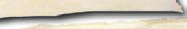<figcaption>Figure fig_ch03_p046_37 (Page 46)</figcaption></figure>
  <figure class="diagram-card" id="fig_ch03_p046_38">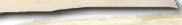<figcaption>Figure fig_ch03_p046_38 (Page 46)</figcaption></figure>
  <figure class="diagram-card" id="fig_ch03_p046_39"><figcaption>Figure fig_ch03_p046_39 (Page 46)</figcaption></figure>
  <figure class="diagram-card" id="fig_ch03_p046_40"><figcaption>Figure fig_ch03_p046_40 (Page 46)</figcaption></figure>
  <figure class="diagram-card" id="fig_ch03_p046_41"><figcaption>Figure fig_ch03_p046_41 (Page 46)</figcaption></figure>
  <figure class="diagram-card" id="fig_ch03_p046_42"><figcaption>Figure fig_ch03_p046_42 (Page 46)</figcaption></figure>
  <figure class="diagram-card" id="fig_ch03_p046_43"><figcaption>Figure fig_ch03_p046_43 (Page 46)</figcaption></figure>
  <figure class="diagram-card" id="fig_ch03_p046_44"><figcaption>Figure fig_ch03_p046_44 (Page 46)</figcaption></figure>
  <figure class="diagram-card" id="fig_ch03_p046_45"><figcaption>Figure fig_ch03_p046_45 (Page 46)</figcaption></figure>
  <figure class="diagram-card" id="fig_ch03_p046_46"><figcaption>Figure fig_ch03_p046_46 (Page 46)</figcaption></figure>
  <figure class="diagram-card" id="fig_ch03_p046_47"><figcaption>Figure fig_ch03_p046_47 (Page 46)</figcaption></figure>
  <figure class="diagram-card" id="fig_ch03_p046_48"><figcaption>Figure fig_ch03_p046_48 (Page 46)</figcaption></figure>
  <figure class="diagram-card" id="fig_ch03_p046_49"><figcaption>Figure fig_ch03_p046_49 (Page 46)</figcaption></figure>
  <figure class="diagram-card" id="fig_ch03_p046_50"><figcaption>Figure fig_ch03_p046_50 (Page 46)</figcaption></figure>
  <figure class="diagram-card" id="fig_ch03_p046_51"><figcaption>Figure fig_ch03_p046_51 (Page 46)</figcaption></figure>
  <figure class="diagram-card" id="fig_ch03_p046_52"><figcaption>Figure fig_ch03_p046_52 (Page 46)</figcaption></figure>
  <figure class="diagram-card" id="fig_ch03_p046_53"><figcaption>Figure fig_ch03_p046_53 (Page 46)</figcaption></figure>
  <figure class="diagram-card" id="fig_ch03_p046_54"><figcaption>Figure fig_ch03_p046_54 (Page 46)</figcaption></figure>
  <figure class="diagram-card" id="fig_ch03_p046_55"><figcaption>Figure fig_ch03_p046_55 (Page 46)</figcaption></figure>
  <figure class="diagram-card" id="fig_ch03_p046_56"><figcaption>Figure fig_ch03_p046_56 (Page 46)</figcaption></figure>
  <figure class="diagram-card" id="fig_ch03_p046_57"><figcaption>Figure fig_ch03_p046_57 (Page 46)</figcaption></figure>
  <figure class="diagram-card" id="fig_ch03_p046_58"><figcaption>Figure fig_ch03_p046_58 (Page 46)</figcaption></figure>
  <figure class="diagram-card" id="fig_ch03_p046_59"><figcaption>Figure fig_ch03_p046_59 (Page 46)</figcaption></figure>
  <figure class="diagram-card" id="fig_ch03_p046_60"><figcaption>Figure fig_ch03_p046_60 (Page 46)</figcaption></figure>
  <figure class="diagram-card" id="fig_ch03_p046_61"><figcaption>Figure fig_ch03_p046_61 (Page 46)</figcaption></figure>
  <figure class="diagram-card" id="fig_ch03_p046_62"><figcaption>Figure fig_ch03_p046_62 (Page 46)</figcaption></figure>
  <figure class="diagram-card" id="fig_ch03_p046_63"><figcaption>Figure fig_ch03_p046_63 (Page 46)</figcaption></figure>
  <figure class="diagram-card" id="fig_ch03_p046_64"><figcaption>Figure fig_ch03_p046_64 (Page 46)</figcaption></figure>
  <figure class="diagram-card" id="fig_ch03_p046_65"><figcaption>Figure fig_ch03_p046_65 (Page 46)</figcaption></figure>
  <figure class="diagram-card" id="fig_ch03_p046_66"><figcaption>Figure fig_ch03_p046_66 (Page 46)</figcaption></figure>
  <figure class="diagram-card" id="fig_ch03_p046_67"><figcaption>Figure fig_ch03_p046_67 (Page 46)</figcaption></figure>
  <figure class="diagram-card" id="fig_ch03_p046_68"><figcaption>Figure fig_ch03_p046_68 (Page 46)</figcaption></figure>
  <figure class="diagram-card" id="fig_ch03_p046_69"><figcaption>Figure fig_ch03_p046_69 (Page 46)</figcaption></figure>
  <figure class="diagram-card" id="fig_ch03_p046_70"><figcaption>Figure fig_ch03_p046_70 (Page 46)</figcaption></figure>
  <figure class="diagram-card" id="fig_ch03_p046_71"><figcaption>Figure fig_ch03_p046_71 (Page 46)</figcaption></figure>
  <figure class="diagram-card" id="fig_ch03_p046_72"><figcaption>Figure fig_ch03_p046_72 (Page 46)</figcaption></figure>
  <figure class="diagram-card" id="fig_ch03_p046_73"><figcaption>Figure fig_ch03_p046_73 (Page 46)</figcaption></figure>
  <figure class="diagram-card" id="fig_ch03_p046_74"><figcaption>Figure fig_ch03_p046_74 (Page 46)</figcaption></figure>
  <figure class="diagram-card" id="fig_ch03_p046_75"><figcaption>Figure fig_ch03_p046_75 (Page 46)</figcaption></figure>
  <figure class="diagram-card" id="fig_ch03_p046_76"><figcaption>Figure fig_ch03_p046_76 (Page 46)</figcaption></figure>
  <figure class="diagram-card" id="fig_ch03_p046_77"><figcaption>Figure fig_ch03_p046_77 (Page 46)</figcaption></figure>
  <figure class="diagram-card" id="fig_ch03_p046_78"><figcaption>Figure fig_ch03_p046_78 (Page 46)</figcaption></figure>
  <figure class="diagram-card" id="fig_ch03_p046_79"><figcaption>Figure fig_ch03_p046_79 (Page 46)</figcaption></figure>
  <figure class="diagram-card" id="fig_ch03_p046_80"><figcaption>Figure fig_ch03_p046_80 (Page 46)</figcaption></figure>
  <figure class="diagram-card" id="fig_ch03_p046_81"><figcaption>Figure fig_ch03_p046_81 (Page 46)</figcaption></figure>
  <figure class="diagram-card" id="fig_ch03_p046_82"><figcaption>Figure fig_ch03_p046_82 (Page 46)</figcaption></figure>
  <figure class="diagram-card" id="fig_ch03_p046_83"><figcaption>Figure fig_ch03_p046_83 (Page 46)</figcaption></figure>
  <figure class="diagram-card" id="fig_ch03_p046_84"><figcaption>Figure fig_ch03_p046_84 (Page 46)</figcaption></figure>
  <figure class="diagram-card" id="fig_ch03_p046_85"><figcaption>Figure fig_ch03_p046_85 (Page 46)</figcaption></figure>
  <figure class="diagram-card" id="fig_ch03_p046_86"><figcaption>Figure fig_ch03_p046_86 (Page 46)</figcaption></figure>
  <figure class="diagram-card" id="fig_ch03_p046_87"><figcaption>Figure fig_ch03_p046_87 (Page 46)</figcaption></figure>
  <figure class="diagram-card" id="fig_ch03_p046_88"><figcaption>Figure fig_ch03_p046_88 (Page 46)</figcaption></figure>
  <figure class="diagram-card" id="fig_ch03_p046_89"><figcaption>Figure fig_ch03_p046_89 (Page 46)</figcaption></figure>
  <figure class="diagram-card" id="fig_ch03_p046_90"><figcaption>Figure fig_ch03_p046_90 (Page 46)</figcaption></figure>
  <figure class="diagram-card" id="fig_ch03_p046_91"><figcaption>Figure fig_ch03_p046_91 (Page 46)</figcaption></figure>
  <figure class="diagram-card" id="fig_ch03_p046_92"><figcaption>Figure fig_ch03_p046_92 (Page 46)</figcaption></figure>
  <figure class="diagram-card" id="fig_ch03_p046_93"><figcaption>Figure fig_ch03_p046_93 (Page 46)</figcaption></figure>
  <figure class="diagram-card" id="fig_ch03_p046_94"><figcaption>Figure fig_ch03_p046_94 (Page 46)</figcaption></figure>
  <div class="page-content">
    <p>–šŒž—Dz”šȼc<br>‹šuc 1<br>46<br>VII<br>“†c“†DZzœ“›<br>–cŽä†›Œc<br>“›“Žš“sš”<br>†›Œc<br>„ŽŦ†›“šŽ<br>†›Œc<br>¡‚š’›Æ<br>†›Œc<br>‹äDZ–Žäš<br>†›Œc<br>ˆŽ›Ǚ›‚›<br>–cŽä†›Œc<br>“›„DZš‹DZš–<br>e“sš”†›Œc<br>Šš¢“<br>†›¢Žš…††›Œc<br>Šš†œ‚›<br>†›Œc<br>e’›Œ‚›<br>†›¢Žš…††›Œc<br>¢„”œ –Žäš<br>†›Œc<br>‹žˆŽ›•§sŽ<br>†›Œc<br>Œs‘›ÆˆŽšŒÅ”›ă›ĞǫmƼš†›Œā‘c‹Žv}†š†ǔ‚Œš›†›Åƣ›Ú¡ƀ<br>Ğ“š§<br>¡sš‘š•›ÆƂ‚›ˆš„›ă›Ž›Úų†›Œā‘›ÆsĞ›s‘¡}e“sš”ā‘Œš›<br>ŠŰ¡ƀĞ“n¡‚š¡Úš¡ų§ˆĞ›s¡ƀ}Ĺs<br>z Šš¢“†›¢Žš…††›Œc<br>z<br>z</p>
  </div>
</section>
<section class="page-section" id="page-47">
  <div class="page-header"><span class="page-number">Page 47</span></div>
  <figure class="diagram-card" id="fig_ch03_p047_01"><figcaption>Figure fig_ch03_p047_01 (Page 47)</figcaption></figure>
  <figure class="diagram-card" id="fig_ch03_p047_02"><figcaption>Figure fig_ch03_p047_02 (Page 47)</figcaption></figure>
  <figure class="diagram-card" id="fig_ch03_p047_03"><figcaption>Figure fig_ch03_p047_03 (Page 47)</figcaption></figure>
  <figure class="diagram-card" id="fig_ch03_p047_04"><figcaption>Figure fig_ch03_p047_04 (Page 47)</figcaption></figure>
  <figure class="diagram-card" id="fig_ch03_p047_05"><figcaption>Figure fig_ch03_p047_05 (Page 47)</figcaption></figure>
  <div class="page-content">
    <p>‹Žv}†“’›c“’›sšĞ›c<br>47<br>sĞ›s‘¡}e“sš”āÇÚ§†ƣ¡} ŽšzDZc “› Ƃš…š†DZc<br>†Æsų‚§mŦ¡sšĬš›Ž›Úǰ ? xÅă¡xƭž<br>x›Ņc 3.5 <br>e“cŠc¢sŽ‘–cǙš†Ššš“sš”–cŽäsƣœ•Ä<br>sĞ›sÇÚ§¢†¡Ž †}ڝų £cu›se‚›âŒāÇ‚}“š†csǮ“š‘›sÇÚ§<br>‚Ú ”›äiƀšÚ“š†c1989 ¡ sĞ›s‘¡}e“sš”i}Ơ}›äDZc“Ʃų<br>gŦDZÄ‹Žv}†iƀ†Æsųe“sš”āǐ›cu ¢‹„Œ›Ƽš¡‚ †}ƀšÚų‚›†c<br>Šš–­Ǣ„†}ˆ}›sÇiǡښǫ›ă¡sšĬc†›“›Æ“ų†›ŒŒš§¢ˆšs§¢–š<br>fç§2012 (Protection of Children from Sexual Offences Act 2012)18 “Ǡ›†<br>‚š¡’ǫn¡‚šŽš¢‘csĞ›š›†›ŒcˆŽ›u›Úų<br>h†›Œ¡Ĺڝ›ă§†›āÇ¢sЛН¢Ĭš ?<br>‹Ž—›‚Œšc –Žä›‚Œšc –Œž—Ĺ›Æ zœ“›Ú“šÄ q¢Žš sĞ›Úc<br>e“sš”ŒĬ§e–ǴǙ‚i‘“šÚų‚c–Žä›‚ŒƼšĹ‚ŒšǜŔ†c<br>¢†šĞcƂƽśŒ‚š“n‚§“DZޛ›Æ†›ųĬššce“‚›Ž›ă›“šÄ<br>s’›cgŎcƂƽśs¢‘š}§ÍeŽ‚§Îmų§ˆš†cesǮ›†›ÅŚ†c<br>e…›sšŽ›s¢‘š}§ˆŽš‚›¡ƀ}š†cNJŗˆÅŁc£cu›sš‚›âŒ ¢s–sÇ<br>iĬššÆe“›¢ƀšÅЧ¡x¢ƭĬ‚§“sƀ§19ƂsšŽc
–§¡ˆ•DZÆz“£†Æ<br>¢ˆšœ–§ž›¢Ǯš ¢šÚÆ¢ˆšœ¢–šf¡ų§†›ŒĹ›Æ“›“Ž›Úų<br>¢ˆšs§¢–š ¢s–sÇ£ssšŽDZc ¡xƭųi¢„DZšuǙÅ£xƧ¡“Æ¡‰Å<br>¢ˆšœ–§q‰œ–Å(CWPO)mų›¡ƀ}ų<br>¢sŽ‘ –cǙš† Ššš“sš”–cŽäsƣœ•Ä¢ˆšs§¢–š†›ŒĹ›¡ź<br>44ǰ“sƀ§ƂsšŽc†›Žœä–c“›…š†c (POCSO Monitoring Cell)pŽÚ››ĞĬ§</p>
  </div>
</section>
<section class="page-section" id="page-48">
  <div class="page-header"><span class="page-number">Page 48</span></div>
  <figure class="diagram-card" id="fig_ch03_p048_01"><figcaption>Figure fig_ch03_p048_01 (Page 48)</figcaption></figure>
  <figure class="diagram-card" id="fig_ch03_p048_02"><figcaption>Figure fig_ch03_p048_02 (Page 48)</figcaption></figure>
  <div class="page-content">
    <p>–šŒž—Dz”šȼc<br>‹šuc 1<br>48<br>VII<br>¢ˆšs§¢–š sǮՂDZā‘›ÆnÅ¡ƀ}ųn¡‚šŽ “DZޛڝcs~›† ”›äh<br>†›Œc “DZ“Ǚ ¡xƭų<br>sǮՂDZāÇiĬšsš†›}ǫ–š—xŽDZc‚›Ž›ă›Ě§Ƃ‚›¢Žš…›<br>ښ†ce‚›Æ†›ų§Žä¡ƀ}š†ŒǫƂ“Åņā¡‘ڝ›ă§㚖›Æ<br>pŽ xÅă†}ś¢Šš…“ÆڎĹ›†§¢“Ĭv¢t‚ƭššÚž<br>‹Žv}†¡} …ÅƣāÇ<br>†›ŒĹ›¡ź“DZ“Ǚ¢Ǟš‚Ǡ§mų‚›†ˆ¡Œ Œ¢Ǯ¡‚Ƽǰ…ÅƣāÇ‹Žv}†<br>†›Å“—›ÚųĬ§mųˆŽ›¢”š…›Úǰ<br>ŽšzDZś†§<br>„›”š¢Šš…c<br>†Æsų<br>e}›Ǚš†¢Žtš›<br>†›¡sšǫų<br>ŽšzDZś¡ź<br>e}›Ǚš†<br>ŒžDZā‘cf„Å”ā‘c<br>†›Å“x›Úų<br>†š†š‚ǴśÆ<br>ns‚Ǵc<br>–cŽä›Úų<br>ˆ­ŽŽ¡}<br>e“sš”ā‘c<br>s}Œs‘c<br>Ǚšˆ›Úų<br>¢–ǴĄš…›ˆ‚DZś†c<br>e…›sšŽ<br>„Å“›†›¢šuś†c<br>m‚›Žš<br>–cŽäs“xŒš›<br>“Åśڝų<br>u“áŒź›¡ź<br>e…›sšŽā‘c<br>ˆŽ›Œ›‚›s‘c<br>“DZތšÚų<br>ŽšzDZ¡ĹmƼš<br>‹Ž–c“›…š†ā‘c<br>‹Žv}†Ʃ§<br>“›¢…Œšš§<br>Ƃ“Åśڝų‚§mų§<br>iƀ“ŽĹų<br>x›Ņc3.6</p>
  </div>
</section>
<section class="page-section" id="page-49">
  <div class="page-header"><span class="page-number">Page 49</span></div>
  <figure class="diagram-card" id="fig_ch03_p049_01"><figcaption>Figure fig_ch03_p049_01 (Page 49)</figcaption></figure>
  <figure class="diagram-card" id="fig_ch03_p049_02"><figcaption>Figure fig_ch03_p049_02 (Page 49)</figcaption></figure>
  <figure class="diagram-card" id="fig_ch03_p049_03"><figcaption>Figure fig_ch03_p049_03 (Page 49)</figcaption></figure>
  <figure class="diagram-card" id="fig_ch03_p049_04"><figcaption>Figure fig_ch03_p049_04 (Page 49)</figcaption></figure>
  <figure class="diagram-card" id="fig_ch03_p049_05"><figcaption>Figure fig_ch03_p049_05 (Page 49)</figcaption></figure>
  <figure class="diagram-card" id="fig_ch03_p049_06"><figcaption>Figure fig_ch03_p049_06 (Page 49)</figcaption></figure>
  <figure class="diagram-card" id="fig_ch03_p049_07"><figcaption>Figure fig_ch03_p049_07 (Page 49)</figcaption></figure>
  <figure class="diagram-card" id="fig_ch03_p049_08"><figcaption>Figure fig_ch03_p049_08 (Page 49)</figcaption></figure>
  <div class="page-content">
    <p>‹Žv}†“’›c“’›sšĞ›c<br>49<br>ƃښÅ›Æm’‚DZ<br>‹Žv}†š…ÅƣāÇƂ‚›‰›ƀ›Úų–¢ŭ”āÇiÇ¡ƀ}Ĺ›<br>›ƀƗ›s§„›† š›ƩǫƃښŝsÇ‚ƭššÚs<br>‹Žv}†<br>ˆ­Žš“sš”Ĺ›¡ź<br>sš“šÇ<br>x›ŅāÇ3.7<br>ST-277-4-SOCIAL SCI. (M)-7-VOL-1</p>
  </div>
</section>
<section class="page-section" id="page-50">
  <div class="page-header"><span class="page-number">Page 50</span></div>
  <figure class="diagram-card" id="fig_ch03_p050_01">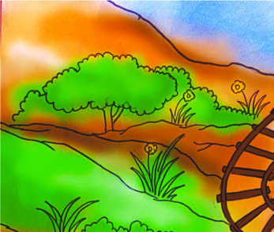<figcaption>Figure fig_ch03_p050_01 (Page 50)</figcaption></figure>
  <figure class="diagram-card" id="fig_ch03_p050_02">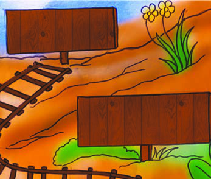<figcaption>Figure fig_ch03_p050_02 (Page 50)</figcaption></figure>
  <figure class="diagram-card" id="fig_ch03_p050_03"><figcaption>Figure fig_ch03_p050_03 (Page 50)</figcaption></figure>
  <figure class="diagram-card" id="fig_ch03_p050_04"><figcaption>Figure fig_ch03_p050_04 (Page 50)</figcaption></figure>
  <figure class="diagram-card" id="fig_ch03_p050_05">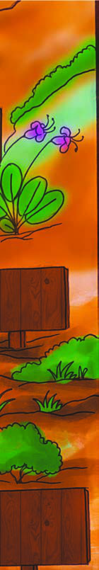<figcaption>Figure fig_ch03_p050_05 (Page 50)</figcaption></figure>
  <figure class="diagram-card" id="fig_ch03_p050_06">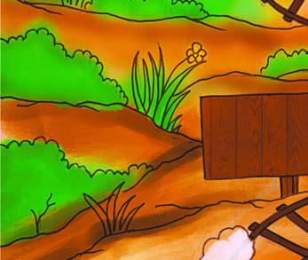<figcaption>Figure fig_ch03_p050_06 (Page 50)</figcaption></figure>
  <figure class="diagram-card" id="fig_ch03_p050_07">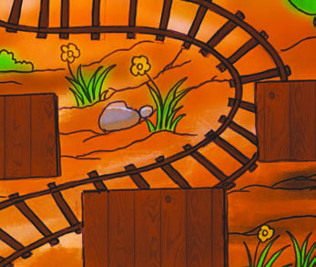<figcaption>Figure fig_ch03_p050_07 (Page 50)</figcaption></figure>
  <figure class="diagram-card" id="fig_ch03_p050_08"><figcaption>Figure fig_ch03_p050_08 (Page 50)</figcaption></figure>
  <figure class="diagram-card" id="fig_ch03_p050_09"><figcaption>Figure fig_ch03_p050_09 (Page 50)</figcaption></figure>
  <figure class="diagram-card" id="fig_ch03_p050_10">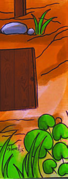<figcaption>Figure fig_ch03_p050_10 (Page 50)</figcaption></figure>
  <figure class="diagram-card" id="fig_ch03_p050_11"><figcaption>Figure fig_ch03_p050_11 (Page 50)</figcaption></figure>
  <figure class="diagram-card" id="fig_ch03_p050_12">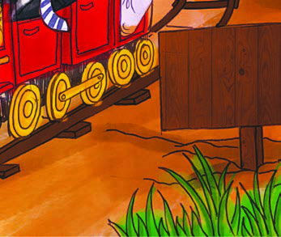<figcaption>Figure fig_ch03_p050_12 (Page 50)</figcaption></figure>
  <div class="page-content">
    <p>–šŒž—Dz”šȼc<br>‹šuc 1<br>50<br>VII<br>Œšǯ›c ‚›ŽĹ›cŒ¢ųšĞ§<br>x›ŅcˆŽ›¢”š…›ă§‚š¡’ ¢xÅśŽ›Úų ¢xš„DZāÇÚ§iŎcs¡Ĭś¡’‚ž<br>z†“Ž›<br>z†“Ž›<br>gŦDzÄ‹Žv}†<br>gŦDzÄ‹Žv}†<br>†›“›Æ“ų<br>†›“›Æ“ų<br>1976<br>1976<br>Œ¢‚‚Ž‚ǵc<br>Œ¢‚‚Ž‚ǵc<br>¢–š•Dz›–c<br>¢–š•Dz›–c<br>etį‚mų›“<br>etį‚mų›“<br>sžĞ›¢ăÅŝ<br>sžĞ›¢ăÅŝ<br>2002<br>2002<br>“›„Dzš‹Dzš–c<br>“›„Dzš‹Dzš–c<br>Œ­›sš“sš”Œš›<br>Œ­›sš“sš”Œš›<br>2016<br>2016<br>xŽÚ¢–“†<br>xŽÚ¢–“†<br>†›s‚›<br>†›s‚›(GST)<br>(GST)<br>nǯ“ce“–š†¡Ĺ<br>nǯ“ce“–š†¡Ĺ<br>‹Žv}†š<br>‹Žv}†š<br>¢‹„u‚›¡Ú›ă§<br>¢‹„u‚›¡Ú›ă§<br>g“›¡}m’‚ž<br>g“›¡}m’‚ž<br>1951<br>1951<br>ˆĞ›ss‘¡}<br>ˆĞ›ss‘¡}<br>mĴc<br>mĴc 9f›<br>f›<br>¢‹„u‚›<br>1<br>¢‹„u‚›<br>42<br>1978<br>1978<br>–ǵœsš”c<br>–ǵœsš”c<br>Œ­›sš“sš”c<br>Œ­›sš“sš”c<br>eƽš‚š›<br>eƽš‚š›<br>¢‹„u‚›<br>44<br>1992<br>1992<br>ˆĕšĹœŽšz§<br>ˆĕšĹœŽšz§<br>†uŽˆš›s<br>†uŽˆš›s<br>†›Œc<br>†›Œc<br>¢‹„u‚›<br>73, 74<br>¢‹„u‚›<br>86<br>¢‹„u‚›<br>101<br>¢‹„u‚›<br>............<br>x›Ņc3.8</p>
  </div>
</section>
<section class="page-section" id="page-51">
  <div class="page-header"><span class="page-number">Page 51</span></div>
  <figure class="diagram-card" id="fig_ch03_p051_01"><figcaption>Figure fig_ch03_p051_01 (Page 51)</figcaption></figure>
  <figure class="diagram-card" id="fig_ch03_p051_02"><figcaption>Figure fig_ch03_p051_02 (Page 51)</figcaption></figure>
  <figure class="diagram-card" id="fig_ch03_p051_03"><figcaption>Figure fig_ch03_p051_03 (Page 51)</figcaption></figure>
  <figure class="diagram-card" id="fig_ch03_p051_04"><figcaption>Figure fig_ch03_p051_04 (Page 51)</figcaption></figure>
  <figure class="diagram-card" id="fig_ch03_p051_05"><figcaption>Figure fig_ch03_p051_05 (Page 51)</figcaption></figure>
  <figure class="diagram-card" id="fig_ch03_p051_06"><figcaption>Figure fig_ch03_p051_06 (Page 51)</figcaption></figure>
  <figure class="diagram-card" id="fig_ch03_p051_07"><figcaption>Figure fig_ch03_p051_07 (Page 51)</figcaption></figure>
  <figure class="diagram-card" id="fig_ch03_p051_08"><figcaption>Figure fig_ch03_p051_08 (Page 51)</figcaption></figure>
  <figure class="diagram-card" id="fig_ch03_p051_09"><figcaption>Figure fig_ch03_p051_09 (Page 51)</figcaption></figure>
  <figure class="diagram-card" id="fig_ch03_p051_10"><figcaption>Figure fig_ch03_p051_10 (Page 51)</figcaption></figure>
  <figure class="diagram-card" id="fig_ch03_p051_11"><figcaption>Figure fig_ch03_p051_11 (Page 51)</figcaption></figure>
  <figure class="diagram-card" id="fig_ch03_p051_12"><figcaption>Figure fig_ch03_p051_12 (Page 51)</figcaption></figure>
  <div class="page-content">
    <p>‹Žv}†“’›c“’›sšĞ›c<br>51<br>z 1976Æn¡‚Ƽǰf”āÇ‹Žv}†›Æ<br><br>ˆ‚›‚š›sžĞ›¢ăÅŝ ?<br>z gŦDZ¡}‹Žv}††›“›Æ“ų “Å•cn‚§ ?<br>z ‹Žv}†›Æf„DZŒš›“ŽĹ› ŒšǮcmŦ§ ?n‚§“Å•c ?<br>z ŽšzDZŧ–Ǵœsš”cmŅsšc Œ­›sš“sš”Œš›†›†›ų ?<br>z “›„DZš‹DZš–cgŦDZ›ÆŒ­›sš“sš”cf¢š#mųŒ‚Æ ?<br>z g‚“¡ŽmŅ‚“gŦDZÄ‹Žv}† ¢‹„u‚›¡xƪ›ĞĬ§ ?<br>sšš†ǔ‚Œš›ŒšǮāÇ“ŽĹš“ųpųš§†ƣ¡}‹Žv}†Œšų<br>–šŒž—›sš“”DZāLjŽ›u›ă§‹Žv}†›ÆŒšǮāÇ“ŽĹųƂ⛍š§<br>‹Žv}†š¢‹„u‚›mā¡†¡Ƽǰ¢‹„u‚›sÇ“ŽĹǰmų§‹Žv}† ‚¡ų<br>“›”„œsŽ›ÚųĬ§368Ëǰ“sƀ§ƂsšŽc‹Žv}† ¢‹„u‚›¡xƭš†ǫ<br>e…›sšŽc ˆšÅ¡Œź›†š§mųšÆ‹Žv}†¡}e}›Ǚš†v}† ¢‹„u‚›<br>¡xƭšÄˆš}ǫ‚Ƽ<br>e}›Ĺg‘ÚŽ‚§<br>1973 Æsš–¢uš§m}†œÅŒ~ś¡źe…›ˆ‚›š<br>›Žų ¢s”“š†ŭ‹šŽ‚›¢sŽ‘–ÅښŽ›¡†‚›¡Ž<br>†Æs› ¢s–›š›Žų‹Žv}†¡}e}›<br>Ǚš†v}†›Æš¡‚šŽ ŒšǮ“c“ŽĹšÄ<br>ˆš}›¡Ƽų –Ƃœc¢sš}‚›“›…›ă‚§<br>x›Ņc3.9<br>“›„Dzš‹Dzš–cŒ­›sš“sš”c<br>“›„DZš‹DZš–c Œ­›sš“sš”ŒšÚ¡ƀĞ‚§<br>2002 Æ86ǰ‹Žv}†š¢‹„u‚›ƂsšŽ<br>Œš§h“DZ“ǙsÇ‹Žv}†›Æ<br>21 m
“sƀš›¢xÅĹ›ĞĬ§h<br>¢‹„u‚›e†–Ž›ă§2009fuǡ§4 †§<br>†›“›Æ“ų†›ŒŒš§͓›„DZš‹DZš–<br>e“sš” †›Œc 2009Î. 6 Œ‚Æ 14<br>“Ǡ“¡ŽƂšŒǫmƼšsĞ›sÇڝc<br>–­z†DZ“c†›ÅŠŰ›‚“Œš “›„DZš<br>‹DZš–ciƀ“ŽĹų‚š§Ƃǘ‚<br>†›Œc<br>¡x‹Žv}†<br>1976 ¡ 42ǰ¢‹„u‚›“’›š§<br>Œ¢‚‚Ž‚Ǵc ¢–š•DZ›–c<br>etį‚mųœ“šÚsÇ‹Žv}<br>†¡}fŒtśÆm’‚›¢ăÅł§<br>‹Žv}†›Æ¢“¡cx›ŒšǮāÇ<br>h¢‹„u‚››ž¡} “ŽĹ››Žų<br>–Ƃ…š†Œš †›Ž“…› ŒšǮāÇ<br>“ŽĹ›‚›†šÆh¢‹„u‚›¡¡x<br>‹Žv}† (Mini Constitution) mų<br>“›‘›Úų</p>
  </div>
</section>
<section class="page-section" id="page-52">
  <div class="page-header"><span class="page-number">Page 52</span></div>
  <figure class="diagram-card" id="fig_ch03_p052_01"><figcaption>Figure fig_ch03_p052_01 (Page 52)</figcaption></figure>
  <figure class="diagram-card" id="fig_ch03_p052_02"><figcaption>Figure fig_ch03_p052_02 (Page 52)</figcaption></figure>
  <figure class="diagram-card" id="fig_ch03_p052_03"><figcaption>Figure fig_ch03_p052_03 (Page 52)</figcaption></figure>
  <figure class="diagram-card" id="fig_ch03_p052_04"><figcaption>Figure fig_ch03_p052_04 (Page 52)</figcaption></figure>
  <figure class="diagram-card" id="fig_ch03_p052_05"><figcaption>Figure fig_ch03_p052_05 (Page 52)</figcaption></figure>
  <figure class="diagram-card" id="fig_ch03_p052_06"><figcaption>Figure fig_ch03_p052_06 (Page 52)</figcaption></figure>
  <figure class="diagram-card" id="fig_ch03_p052_07"><figcaption>Figure fig_ch03_p052_07 (Page 52)</figcaption></figure>
  <figure class="diagram-card" id="fig_ch03_p052_08"><figcaption>Figure fig_ch03_p052_08 (Page 52)</figcaption></figure>
  <figure class="diagram-card" id="fig_ch03_p052_09"><figcaption>Figure fig_ch03_p052_09 (Page 52)</figcaption></figure>
  <figure class="diagram-card" id="fig_ch03_p052_10"><figcaption>Figure fig_ch03_p052_10 (Page 52)</figcaption></figure>
  <figure class="diagram-card" id="fig_ch03_p052_11"><figcaption>Figure fig_ch03_p052_11 (Page 52)</figcaption></figure>
  <figure class="diagram-card" id="fig_ch03_p052_12"><figcaption>Figure fig_ch03_p052_12 (Page 52)</figcaption></figure>
  <figure class="diagram-card" id="fig_ch03_p052_13"><figcaption>Figure fig_ch03_p052_13 (Page 52)</figcaption></figure>
  <figure class="diagram-card" id="fig_ch03_p052_14"><figcaption>Figure fig_ch03_p052_14 (Page 52)</figcaption></figure>
  <figure class="diagram-card" id="fig_ch03_p052_15"><figcaption>Figure fig_ch03_p052_15 (Page 52)</figcaption></figure>
  <div class="page-content">
    <p>–šŒž—Dz”šȼc<br>- ‹šuc 1<br>52<br>VII<br>Ƃ…š†¡ƀĞx›‹Žv}†š¢‹„u‚›sÇiÇ¡ƀ}Ĺ›pŽ£}c £Ä<br>‚ššÚs<br>†›Œādž}ƀšÚ¢ƠšÇ<br>ŽšzDzŧg†›c<br>šƒšÅƒDzŒšsš¡‚<br>‹žˆŽ›•§sŽc<br>Œ„Dz“›ˆĹ§†›Œc<br>¡sšĬŒšŅc<br>‚}š†š“›ƽ<br>Ššš“sš”<br>†›ŒāÇ<br>sŔ†ŒšÚ¡Œų§<br>f“”Dzc<br>ȼœ…††›¢Žš…†<br>†›Œcs}š–›Æ<br>‚¡ų<br>Œs‘›Æ†Æs›“šÅŚ‚¡ÚНsÇ“š›ă¢Ƽš#m¡Ŧš¡ÚsšŽDZā‘š§<br>†›āÇÚ§Œ†Ǡ›šÚšÄs’›Ě‚§?<br>†›ŒāÇ †}ƀšÚ¢ƠšÇ ¢†Ž›}ų “›“›…‚Žc ¡“Ƽ“›‘›s‘š§ g“›¡}<br>–žx›ƀ›Úų‚§<br>m¡Ŧš¡Úšsǰe‚›¡źsšŽāÇ ?<br>z<br>z†ā‘¡}“DZ‚DZǘŒš‚šÆˆŽDZāÇ<br>z<br>z†—›‚cˆžÅĴŒšciǡښǫšĹ†›Œ†›ÅƣšāÇ<br>z<br>†›Œā¡‘ڝ›ăǫe›“›Ƽš§Œ<br>z<br>“DZ‚DZǘ ‚šÆˆŽDZā‘ǫ –Œž—Œš§ †ƣ¢}‚§ mÿ›c ¡ˆš‚†›ŒāÇ<br>e†–Ž›ÚšÄmƼš“Žc‹Žv}†šˆŽŒš›Šš…DZǙŽš§ˆ‚›†›ŒāÇ<br>ŽžˆœsŽ›Ú¡ƀ}¢ƠšÇe“¡Ʃ‚›¡Žǫe‹›Ƃšā‘c–ŒŽā‘ciÅų“ŽšÄ<br>–š…DZ‚Ĭ§e‚§z†š…›ˆ‚DZ–Œž—Ĺ›Æ–Ǵš‹š“›s“Œš§gā¡†iŽų<br>m‚›Åƀs¡‘‹Žv}†šˆŽŒšc z†š…›ˆ‚DZˆŽŒšŒš§–Œœˆ›¢ÚĬ‚§</p>
  </div>
</section>
<section class="page-section" id="page-53">
  <div class="page-header"><span class="page-number">Page 53</span></div>
  <figure class="diagram-card" id="fig_ch03_p053_01"><figcaption>Figure fig_ch03_p053_01 (Page 53)</figcaption></figure>
  <div class="page-content">
    <p>‹Žv}†“’›c “’›sšĞ›c<br>53<br>£““›…DZā‘c£“zš‚DZā‘cn¡ǫ†ƣ¡}–Œž—Ĺ›Æ‹Žv}†<br>Œ¢ųšĞ“ƩųŒžDZāLj­Ž–Œž—ciǡښǫų‚›ž¡}ŒšŅ¢ŒgŦDZ¡<br>ˆŽŒš…›sšŽ Ǚ›‚›–Œ‚Ǵ Œ‚†›Ž¢ˆä z†š…›ˆ‚DZ›ƀƗ›Ú§f›iÅŚÄ<br>s’›ž<br>‚}ÅƂ“ÅņāÇ<br>z<br>†›Œā‘Œš›ŠŰ¡ƀĞ “šÅŚ‚¡ÚНs‘cx›Ņā‘c¢”tŽ›ă§pŽ<br>¡sš‘š•§‚ššÚž<br>z<br>͋Žv}†¡}–“›¢”•‚sÇÎmų“›•Ĺ›Æ㚖›ÆpŽ¡–Œ›†šÅ<br>–cv}›ƀ›Úž<br>z<br>gŦDZÄ‹Žv}†›¡f”ā‘¡}e}›Ǚš†Ĺ›Æ†›ā‘¡}㚖›†š›<br>pŽ‹Žv}†‚ƭššÚž<br>z<br>ÍsĞ›s‘¡}–Žäc ¢ˆšs§¢–š†›Œ“cÎmų“›•Ĺ›Æ†›Œ“›„u§…Ž¡}<br>–—š¢Ĺš¡}pŽ¢Šš…“Æڎ ˆŽ›ˆš}›–cv}›ƀ›Úž</p>
  </div>
</section>
<section class="page-section" id="page-54">
  <div class="page-header"><span class="page-number">Page 54</span></div>
  <figure class="diagram-card" id="fig_ch03_p054_01"><figcaption>Figure fig_ch03_p054_01 (Page 54)</figcaption></figure>
  <figure class="diagram-card" id="fig_ch03_p054_02"><figcaption>Figure fig_ch03_p054_02 (Page 54)</figcaption></figure>
  <figure class="diagram-card" id="fig_ch03_p054_03">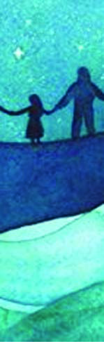<figcaption>Figure fig_ch03_p054_03 (Page 54)</figcaption></figure>
  <figure class="diagram-card" id="fig_ch03_p054_04"><figcaption>Figure fig_ch03_p054_04 (Page 54)</figcaption></figure>
  <figure class="diagram-card" id="fig_ch03_p054_05"><figcaption>Figure fig_ch03_p054_05 (Page 54)</figcaption></figure>
  <figure class="diagram-card" id="fig_ch03_p054_06"><figcaption>Figure fig_ch03_p054_06 (Page 54)</figcaption></figure>
  <figure class="diagram-card" id="fig_ch03_p054_07"><figcaption>Figure fig_ch03_p054_07 (Page 54)</figcaption></figure>
  <figure class="diagram-card" id="fig_ch03_p054_08"><figcaption>Figure fig_ch03_p054_08 (Page 54)</figcaption></figure>
  <figure class="diagram-card" id="fig_ch03_p054_09"><figcaption>Figure fig_ch03_p054_09 (Page 54)</figcaption></figure>
  <div class="page-content">
    <p>4<br>e†œ‚››Æ†›ų§<br>†œ‚››¢Ú§<br>Ï|šÄ Žš¢Œ”ǴŽc m›¡Œź› Ǘž‘›Æ<br>eĕǰ㚖›Æˆ~›Ú¢ƠšÇpŽ„›“–c<br>ˆ‚›pŽe…DZšˆsÄ㚖›Æ“ųpŽ<br>Œǟœcf¡ų§‚›Ž›ă›c“›…c¡‚šƀ›<br>…Ž›ă›Žų|šÄŒÄ†›Ž›Æˆžž›Ğ<br>ŽšŒ†šƒ”šȻ›¡}¡‚šĞ}Ĺš§ˆ‚›“š›<br>gŽų›Žų‚§£—ŭ“ˆ¢Žš—›‚¡ź<br>ˆŅÄŒǟœcŠš¢†š¡}šƀcgŽ›Úų‚§<br>iǡښǫšÄfe…DZšˆs†§s’›Ě›Ƽ<br>‚šÄŒ†Ǡ›šÚ››Žų –šŒž—›sâŒc<br>e†–Ž›ă§m¢ųš}§m’¢ųǮ§¢ˆš›ˆ›Ä†›Ž››Ž›ÚšÄe¢Ŕ—cf“”DZ¡ƀН<br>m†›Ú§“›„dtc¢‚šų›ŽšŒ†šƒ”šȻ›c –ÿ}¡ƀНˆ›Ä†›Ž›¡<br>gŽ›ƀ›}ś¢Ú§|šÄŒš›¢ƀšÇ“›‚Ơ›ÚŽųe¢Ŕ—Ĺ›¡ź Œtc<br>m¡ź Œ†Ǡ›ÆŒššĹ Œŝš›ǗžÇ“›Ğ§“œĞ›Æ¡xų¢ƀšÇ|ā‘›Ž“Žc<br>Œš‚šˆ›‚šÚ¢‘š}§h–c‹“¡Ĺڝ›ă§ˆsĬš›ä§Œ ”šȻ›f<br>e…DZšˆs¡† “›‘›ƀ›ămų›Ğ§|ā‘¡}–šų›…DZśÆ‚¡ų†›•§s‘ÿŽš<br>sĞ›s‘¡}Œ†Ǡ›Æ–šŒž—›se–Œ‚Ǵś¡źce–—›Ǒ‚¡}c “›•c<br>ˆŽĹŽ¡‚ų§ˆsĬš›‚¡ź ¡‚ǮšƂƽś›Æfe…DZšˆsÄ<br>¢t„›¡ăųŒšŅŒƼä§Œ”šȻ›†Æs›”ÞŒš–¢ŭ”Ĺ›¡ź £x‚†DZc<br>“’›f‚DZŦ›sŒš›ˆŽ›“Åņ¡ƀ}sŒĬš›Ð<br>Íeõ›ă›ssÇ΢šmˆ›¡zeƒÇsǰ<br>x›Ņc4.1</p>
  </div>
</section>
<section class="page-section" id="page-55">
  <div class="page-header"><span class="page-number">Page 55</span></div>
  <figure class="diagram-card" id="fig_ch03_p055_03"><figcaption>Figure fig_ch03_p055_03 (Page 55)</figcaption></figure>
  <figure class="diagram-card" id="fig_ch03_p055_04">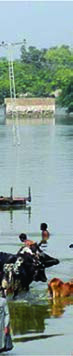<figcaption>Figure fig_ch03_p055_04 (Page 55)</figcaption></figure>
  <div class="page-content">
    <p>e†œ‚››Æ†›ų§†œ‚››¢Ú§<br>55<br>gŦDZÄŽšȸˆ‚›f›Žų ¢šmˆ›¡zeƒÇsšŒ›¡ź sĞ›Úš¡ĹpŽ<br>e†‹“cˆŽ›x¡ƀĞ¢Ƽš?<br>–Œž—Ĺ›¡ x› “›‹šuāÇÚ§eŗ›ÚųˆŽ›u† †Æsš¡‚ ŒšǮ›†›Åŝų<br>–š—xŽDZc†›†›ų›Žųmųš§mˆ›¡zeƒÇsšŒ›¡źhe†‹“c<br>–žx›ƀ›Úų‚§–Œž—Ĺ›¡ź ŒtDZ…šŽ›Æ†›ų§“DZޛs¡‘p’›“šÚÆ<br>e“–Žādž›¢•…›ÚÆ–šŒž—›sŒš›“›¢“x›ÚÆ‚}ā›Ƃ“‚s¡‘š§<br>e†œ‚›mų§“›¢”•›ƀ›Úų‚§ŒÄ“›…›¢š¡}x› –šŒž—›s“›‹šuā¡‘<br>e“Ž¡}zš‚›¢}¢š Œ‚Ĺ›¡ź¢š“Åuś¡ź¢š ¢ˆŽ›Æp’›“šÚ››Žų<br>s’›“sÇiĬš›Ğc¡‚š’›c “›„DZš‹DZš–“ce“–Žā‘c†›¢•…›Ús<br>e“–Žā‘Ĭš›Ğc†Æsš‚›Ž›Ús“DZޛmų†››ǫˆŽ›u†sÇ<br>¡sš}Úš‚›Ž›Ús‚}ā›Ƃƽśs‘›ž¡}c x› –šŒž—›s“›‹šuā¡‘<br>eŽ›ss‘›¢ÚšÚ››Žų–šŒž—›s†œ‚›¢†}›¡}Úų‚›†š›¢†Ķ‚Ǵc<br>†Æs›Ƃ…š† “DZޛs¡‘ڝ›ăc –c‹“ā¡‘ڝ›ăŒš§hˆš~‹šuŧ<br>xÅă¡xƭ¡ƀ}ų‚§<br>eŽ›s§“”cˆšÅ”Ǵcm¡ųš¡Úǫˆ„āǪ†›āÇÚ§ˆŽ›xŒǫ‚¢Ƽ ?<br>m¡ŦƼǰeÅƒĹ›š§h“šÚsÇ–š…šŽš›iˆ¢šu›Úų‚§?<br>z<br>z<br>z<br>z<br>‚DZˆŽ›u† ‹›¢ÚĬg}ā‘›Æ†›ų§x› “›‹šuā¡‘ ŒšǮ›†›ưŝų<br>Ƃ⛍¡š§eŽ›s“ƳڎcˆšÅ”Ǵ“Æڎc(Marginalisation)mų§<br>ˆų‚§<br>–Œž—Ĺ›ÆeŽ›s“Ƴڎc†}ڝų‚§ˆ sšŽāÇ¡sšĬš§</p>
  </div>
</section>
<section class="page-section" id="page-56">
  <div class="page-header"><span class="page-number">Page 56</span></div>
  <figure class="diagram-card" id="fig_ch03_p056_01">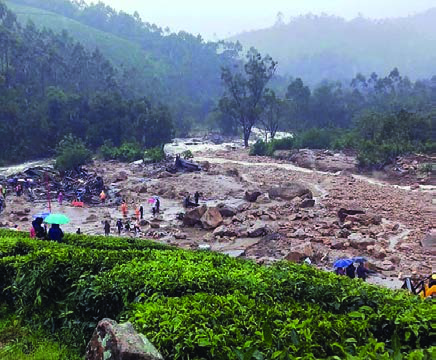<figcaption>Figure fig_ch03_p056_01 (Page 56)</figcaption></figure>
  <figure class="diagram-card" id="fig_ch03_p056_02">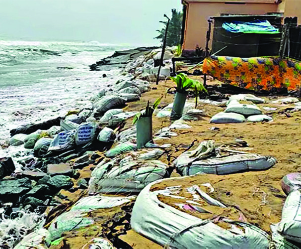<figcaption>Figure fig_ch03_p056_02 (Page 56)</figcaption></figure>
  <figure class="diagram-card" id="fig_ch03_p056_03"><figcaption>Figure fig_ch03_p056_03 (Page 56)</figcaption></figure>
  <figure class="diagram-card" id="fig_ch03_p056_04"><figcaption>Figure fig_ch03_p056_04 (Page 56)</figcaption></figure>
  <div class="page-content">
    <p>–šŒž—Dz”šȼc<br>‹šuc 1<br>56<br>VII<br>x›ŅāÇ4.2<br>x›Ņādž›Žœä›ă¢Ƽš?hx›Ņā‘›Æsšųe“ǙsÇn¡‚ƼšŒš§?<br>z ƂՂ›¢äš‹c<br>z<br>z <br>z<br>ƂՂ›„ŽŦāǪŒ†•DZ†›Åƣ›‚ „ŽŦāǪ (Natural and Man made Disasters) <br>mų›“šÆ–ǴŦŒšĬš›Žų“ǘ“ssdžǏ¡ƀ}ų‚›ž¡}eŽ›s“Ƴڎc<br>iĬšsų¡“ǫ¡ƀšÚc‹žŒ›sÚciŽÇ¡ˆšĞÆs}Ƣ䚋cŒ‚š<br>ƂՂ›„ŽŦāǪ“’›c ŗceˆs}āÇ“DZ“–š”šs‘›¡ „ŽŦāǪ<br>Œ‚šŒ†•DZ†›Åƣ›‚ „ŽŦāǪ“’›ceŽ›s“Æڎc–c‹“›Úų<br>zš‚›Œ‚¢ušŅ›cuˆ„“›s‘›¡ “DZ‚DZš–Ĺ›¡źe}›Ǚš†Ĺ›Æx›¡Ž Œ†fˆžư“c<br>p’›“šÚų‚§“’›(Exclusion)eŽ›s“Ƴڎc–c‹“›Úų“›„DZš‹DZš–Ĺ›†ǫ<br>e“–Žc†›¢•…›Úų‚§g‚›†„š—ŽŒš§<br>eŽ›s“ÆڎĹ›¡ź ŒǮ§ sšŽāÇ s¡Ĭś “›“›…‚Žc<br>eŽ›s“Æڎ¡Ĺڝ›ă§pŽxÅă–cv}›ƀ›Ús<br>xÅ㚖žxsāÇ<br>z p’›“šÚƳ<br>z s}›¡š’›ƀ›ÚÆ<br>z ƂՂ›„ŽŦāǪ<br>z Œ†•DZ†›ưƣ›‚ „ŽŦāǪ<br>f¡Žš¡Úš§–Œž—Ĺ›ÆeŽ›s“Æڎc¢†Ž›}ų‚§ ?<br>–Œž—Ĺ›ƳeŽ›s“Ƴڎ›Ú¡ƀ}sc “›¢“x†c¢†Ž›}sc ¡xƭų<br>†›Ž“…›“›‹šuāǪiĬ§ȻœsÇğšť–§¡zťsÇ„‘›‚Å¢ušŅ“›‹šuښÅ<br>†DZž†ˆäāÇ„šŽ›ŝDZc¢†Ž›}ų“ưe‹šưƒ›sÇ‹›ų¢”•›ÚšÅz›Ƴ¢Œšx›‚Å<br>‚}ā›“Åg‚›†§i„š—ŽŒš§</p>
  </div>
</section>
<section class="page-section" id="page-57">
  <div class="page-header"><span class="page-number">Page 57</span></div>
  <figure class="diagram-card" id="fig_ch03_p057_01"><figcaption>Figure fig_ch03_p057_01 (Page 57)</figcaption></figure>
  <figure class="diagram-card" id="fig_ch03_p057_02"><figcaption>Figure fig_ch03_p057_02 (Page 57)</figcaption></figure>
  <figure class="diagram-card" id="fig_ch03_p057_03"><figcaption>Figure fig_ch03_p057_03 (Page 57)</figcaption></figure>
  <figure class="diagram-card" id="fig_ch03_p057_04"><figcaption>Figure fig_ch03_p057_04 (Page 57)</figcaption></figure>
  <figure class="diagram-card" id="fig_ch03_p057_05"><figcaption>Figure fig_ch03_p057_05 (Page 57)</figcaption></figure>
  <figure class="diagram-card" id="fig_ch03_p057_06"><figcaption>Figure fig_ch03_p057_06 (Page 57)</figcaption></figure>
  <div class="page-content">
    <p>e†œ‚››Æ†›ų§†œ‚››¢Ú§<br>57<br>g‚›Æq¢Žš “›‹šuś†ceŽ›s“ÆڎĹ›¡†‚›¡Žǫ ¢ˆšŽšĞś¡ź<br>“›xŽ›ŅŒĬ§<br>‚›Ž“†ŦˆŽc  jŽžĞƠc –ÅښÅ ˆ› ǗžÇ<br>g†›Œ‚Æeƭÿš‘›ˆĕŒ›–§ŒšŽsu“ˆ›–§sžÇ<br>mų›¡ƀ}cs}›ƀǫ›Úž}Œš›ŽųjŽžĞƠcu“ˆ›<br>m–›š›ŽųxŽ›ŅcŒšǮ›Œ›ă–ŒŽĹ›†§eƭÿš‘›‚}Úc<br>s›ă‚§ˆĕŒ›¡ų „‘›‚§Šš›s¡Ǘž‘›Æˆ~›ÚšÄ<br>e†“„›ÚšĹ‚›ÆƂ‚›<br>¢•…›ă§ˆĕŒ›¡}£s<br>ˆ›}›ă§eƭÿš‘›Ǘž‘›¢<br>Ú§ “Žsc Ǘž‘›Æ<br>sǮ››ŽĹsc ¡xƪ<br>ˆĕŒ›<br>s›‚›¡ź<br>‹šuŒš›zŶ›ŒšÅǗž‘›†§<br>‚œ“ăˆs‚›sś<br>ŠĕÇ¡ƀ¡}ǫe“¢”<br>•›ƀsÇ gųc ǗžÇ<br>ŒDZž–›Ĺ›Æsšǰ<br>jŽžĞƠ¡Ĺ –Ʊښōˆ›“›„Dzšcg†›<br>eƮÿš‘› - ˆĕŒ›–§ŒšŽs “›„Dzšc<br>x›Ņc4.3<br>Œ—šŃš<br>eƭÄsš‘›<br>Œs‘›¡Ĺ “šÅĹNJŗ›ă¢Ƽš ?<br>‚š’§ųzš‚›mų§sŽ‚¡ƀĞ“ÅÚ§xŽ›ŅˆŽŒš›“›„DZš‹DZš–e“–ŽāÇ<br>iÅųzš‚›mų§sŽ‚¡ƀГņ›¢•…›ă›Žų“›„DZš‹DZš–c†›¢•…›Ú¡ƀĞ“ÅÚ§<br>‚DZš“–Žāǐ‹DZŒšÚ“šÄŒ—šŃšeƭÿš‘›ˆŽ›NJŒ›ă“›„DZš‹DZš–¡Ĺ<br>–šŒž—›sˆŽ›“Åņś†ǫpŽˆš…›¡ų§‚›Ž›ă›Ě‚š§eƭÿš‘›¡}<br>Ƃ“Åņ Œ—‚Ǵc<br>zš‚›¡}e}›Ǚš†Ĺ›ǫeŽ›s“ÆڎĹ›¡†‚›¡Ž Œ—šŃšeƭÿš‘›<br>†}ś–ŒŽcˆŽ›x¡ƀĞ¢Ƽš?<br>„‘›‚§“›‹šuāÇÚ§“š—†Ĺ›Æ–ĕŽ›Úš†c ¡ˆš‚“’››Æ†}ښ†c †Ƽ<br>“ȻāÇ…Ž›Úš†c “›„DZš‹DZš–c¢†}š†ce“sš”Œ›Ƽš‚›Žų sšŒš›ŽųŒƠ§<br>†›†›ų›Žų‚§e}›Ǚš† –­sŽDZāÇeŦǠ§‚DZ‚–Ǵš‚ũDZcmų›“¡Ƽǰ<br>†›¢•…›Ú¡ƀĞe“Ǚg“ưÚ§iĬš›Žųzš‚›¡}e}›Ǚš†Ĺ›ǫgŎc<br>“›¢“x†āÇuŽ‚ŽŒšŒ†•DZš“sš”cv†Œš§e‚›¡†Ƃ‚›¢Žš…›ÚšÄ</p>
  </div>
</section>
<section class="page-section" id="page-58">
  <div class="page-header"><span class="page-number">Page 58</span></div>
  <figure class="diagram-card" id="fig_ch03_p058_01"><figcaption>Figure fig_ch03_p058_01 (Page 58)</figcaption></figure>
  <figure class="diagram-card" id="fig_ch03_p058_02"><figcaption>Figure fig_ch03_p058_02 (Page 58)</figcaption></figure>
  <figure class="diagram-card" id="fig_ch03_p058_03"><figcaption>Figure fig_ch03_p058_03 (Page 58)</figcaption></figure>
  <figure class="diagram-card" id="fig_ch03_p058_04"><figcaption>Figure fig_ch03_p058_04 (Page 58)</figcaption></figure>
  <figure class="diagram-card" id="fig_ch03_p058_05"><figcaption>Figure fig_ch03_p058_05 (Page 58)</figcaption></figure>
  <figure class="diagram-card" id="fig_ch03_p058_06"><figcaption>Figure fig_ch03_p058_06 (Page 58)</figcaption></figure>
  <figure class="diagram-card" id="fig_ch03_p058_07"><figcaption>Figure fig_ch03_p058_07 (Page 58)</figcaption></figure>
  <figure class="diagram-card" id="fig_ch03_p058_08"><figcaption>Figure fig_ch03_p058_08 (Page 58)</figcaption></figure>
  <figure class="diagram-card" id="fig_ch03_p058_09"><figcaption>Figure fig_ch03_p058_09 (Page 58)</figcaption></figure>
  <figure class="diagram-card" id="fig_ch03_p058_10"><figcaption>Figure fig_ch03_p058_10 (Page 58)</figcaption></figure>
  <figure class="diagram-card" id="fig_ch03_p058_11"><figcaption>Figure fig_ch03_p058_11 (Page 58)</figcaption></figure>
  <figure class="diagram-card" id="fig_ch03_p058_12"><figcaption>Figure fig_ch03_p058_12 (Page 58)</figcaption></figure>
  <figure class="diagram-card" id="fig_ch03_p058_13"><figcaption>Figure fig_ch03_p058_13 (Page 58)</figcaption></figure>
  <figure class="diagram-card" id="fig_ch03_p058_15"><figcaption>Figure fig_ch03_p058_15 (Page 58)</figcaption></figure>
  <figure class="diagram-card" id="fig_ch03_p058_16"><figcaption>Figure fig_ch03_p058_16 (Page 58)</figcaption></figure>
  <figure class="diagram-card" id="fig_ch03_p058_17"><figcaption>Figure fig_ch03_p058_17 (Page 58)</figcaption></figure>
  <figure class="diagram-card" id="fig_ch03_p058_18"><figcaption>Figure fig_ch03_p058_18 (Page 58)</figcaption></figure>
  <figure class="diagram-card" id="fig_ch03_p058_19"><figcaption>Figure fig_ch03_p058_19 (Page 58)</figcaption></figure>
  <div class="page-content">
    <p>–šŒž—Dz”šȼc<br>‹šuc 1<br>58<br>VII<br>“›„DZš‹DZš–Œš§¢“Ĭ‚§mų‚š›ŽųeŽ›s“Æڎ›Ú¡ƀĞz†‚¡}<br>iųŒ†Ĺ›†§¢“Ĭ›Ƃ“ưśăˆ Œ—‚§“DZޛs‘¡}c†›ˆš}§͓›„DZ¡sšĬ§<br>ƂŠŗŽš“sÎmų –¢ŭ”c†Æs›NJœ†šŽšuŽ“c ŒǮ†¢“šĽš† ¢†‚šÚ‘c<br>f…†›s“›„DZš‹DZš–Ĺ›†§ƂxšŽc†Æs›eŽ›s“Æڎ¡Ĺm‚›ÅœŽš§<br>sŽDZš¢Úš–§n›š–§xš“eƭš£“sĮ–ǴšŒ›sÇxĞƠ›–ǴšŒ›sÇ“Úc<br>eƒÇtš„ÅŒ­“›¡ˆšƨ›Æ¢š—ųšÄˆį›Ǯ§¡sˆ›sƀť„šäš›<br>¢“š…ť‚}ā›“Ž¡}Ƃ“ÅņāÇe‚›†§i„š—ŽŒš§<br>x›ŅāÇ4.4<br>¡ˆšƨ›Æ¢š—ųšÄ<br>NJœ†šŽšuŽ<br>sŽDZš¢Úš–§n›š–§xš“<br>eƭš£“sĮ–ǴšŒ›sÇ<br>xĞƠ›–ǴšŒ›sÇ<br>“ÚceƒÇtš„ÅŒ­“›<br>ˆį›Ǯ§¡sˆ›sƀť<br>„šäš›¢“š…ť<br>x›Ņc4.5<br>x›Ņc4.6<br>–š“›Ņ›Šš§‰ž¡ (1831 - 1897)<br>¢zDzš‚›š“‰ž¡ (1827-1890)<br>zš‚›Œ‚<br>xž•Ĺ›†§ “›¢…Œš –Œž—¡Ĺ<br>“›¢”•›ƀ›Úųˆ„Œš§„‘›‚§–šŒž—›sŒšǮś†§<br>‚}Úcs›ă¢zDZš‚›š“‰ž¡š§hˆ„cf„DZŒš›<br>iˆ¢šu›ă‚§ȻœsÇ„‘›‚Åmų›“Åښ›“›„DZš‹DZš– Ǚšˆ†<br>āljž¡ Ǚšˆ›ă<br>¡ˆÃsĞ›sÇښ›gŦDZ›Æf„DZŒš›Ǚšˆ›ăˆž¡†›¡<br>“›„DZšĹ›¡ Ƃ…š†š…DZšˆ›sš›Žų Օ›ÚšÅڝc<br>¡‚š’›š‘›sÇڝŒš›†›”šˆš~”š Ǚšˆ›ă“›„DZš‹DZš–<br>¢Œt›¡ g“Ž¡} –Œ÷–c‹š“†sÇ ˆŽ›u›ă§ ˆž¡†<br>ž›¢“’§–›Ǯ›¡ –š“›Ņ›Šš§‰ž¡ ˆž¡† ž›¢“’§–›Ǯ›<br>mų§ˆ†Å†šŒsŽc¡xƪ</p>
  </div>
</section>
<section class="page-section" id="page-59">
  <div class="page-header"><span class="page-number">Page 59</span></div>
  <figure class="diagram-card" id="fig_ch03_p059_01"><figcaption>Figure fig_ch03_p059_01 (Page 59)</figcaption></figure>
  <figure class="diagram-card" id="fig_ch03_p059_02"><figcaption>Figure fig_ch03_p059_02 (Page 59)</figcaption></figure>
  <figure class="diagram-card" id="fig_ch03_p059_03"><figcaption>Figure fig_ch03_p059_03 (Page 59)</figcaption></figure>
  <figure class="diagram-card" id="fig_ch03_p059_04"><figcaption>Figure fig_ch03_p059_04 (Page 59)</figcaption></figure>
  <figure class="diagram-card" id="fig_ch03_p059_05"><figcaption>Figure fig_ch03_p059_05 (Page 59)</figcaption></figure>
  <figure class="diagram-card" id="fig_ch03_p059_06"><figcaption>Figure fig_ch03_p059_06 (Page 59)</figcaption></figure>
  <figure class="diagram-card" id="fig_ch03_p059_07"><figcaption>Figure fig_ch03_p059_07 (Page 59)</figcaption></figure>
  <figure class="diagram-card" id="fig_ch03_p059_08"><figcaption>Figure fig_ch03_p059_08 (Page 59)</figcaption></figure>
  <figure class="diagram-card" id="fig_ch03_p059_09"><figcaption>Figure fig_ch03_p059_09 (Page 59)</figcaption></figure>
  <div class="page-content">
    <p>e†œ‚››Æ†›ų§†œ‚››¢Ú§<br>59<br>¡ˆŽ›šÅg“›ŽšŒ–ǵšŒ›†šƩÅ (1879-1973)<br>–Ǵš‹›Œš† ƂǙš†Ĺ›¡ź Ǚšˆs†c gŦDZ›¡<br>Ƃ…š† zš‚›“›Žŗ –ŒŽ†šsŽ›ÆpŽš‘Œš§–šŒž—›s<br>ˆŽ›•§sÅŚ“šg¢Ŕ—cƖšǥš…›ˆ‚DZśžų›ǫ<br>–šŒž—DZ“›¢“x†Ĺ›¡†‚›¡Ž†›¡sšĬȻœ“›„DZš‹š–Ĺ›<br>¡ź Ƃš…š†DZ¡Ĺs›ă§¢Šš…DZ¡ƀ}Ĺ›Ƃ“Åśă“DZޛsž}›š<br>›Žų¡ˆŽ›šÅ<br>x›Ņc4.7<br>„‘›‚¡Ž¢ƀš¡‚¡ų –šŒž—›sŒšeŽ›s“Ƴڎc¢†Ž›¢}Ĭ›“ų Œ¡ǮšŽ<br>“›‹šuŒš§¢ušŅz†‚<br>Ƃ¢‚DZs‹žŒ›”šȻ¢Œts‘›ƳƂšxœ†sšcŒ‚Æp¡ĹšŽŒ›ă‚šŒ–›Úų<br>¢ušŅz†‚–ǴŦŒš›e›“sǪ†›ưƣ›Úsce“Ƃ¢šu›ă§zœ“›Úsc<br>¡xƭųe“Å‚†‚§zœ“›‚Žœ‚›csc –ǰǗšŽ›sŒžDZā‘cˆ›Ŧ}Žų<br>“Žš§¢ušŅz†‚¡}–ǰ–§sšŽ›s–c‹š“†sÇÚ§ŒÄsšā¢‘ÚšÇ<br>¡ˆš‚–Œž—Ĺ›Æ–ǴœsšŽDZ‚ £s“ų›ĞĬ§“–›Úųg}ā‘›¡ “›‹“ā‘›Ƴ<br>ˆžưš…›sšŽciĬš›Žų ¢ušŅz†‚Ʃ§fe…›sšŽc⢌ †•§}Œš›<br>e‚ŒžŒš§h–šŒž—›s“›‹šuceŽ›s“Æڎ›Ú¡ƀĞ‚§<br>gŦDZť †Ž“c””šȻśƳ nǮ“c Ƃ…š†¡ƀĞ<br>–c‹š“†sǪ†Ƴs›“DZޛs‘›ƳpŽšǪ¢ušŅŒ†•DZ<br>Ž¡}‚†‚§zœ“›‚Ĺ›¡ź –cŽäĹ›†§¢“Ĭ›Ƃ“ưśă<br>¢ušŅ“ưuŒ†•DZ¢Žš}ǫgŦDZ¡}†cŽžˆœsŽ›Úų‚›Ƴ<br>sšŽDZŒš›–Ǵš…œ†c¡xĹ›“DZޛ<br>¡“›ƱmƓ›Ä (1902-1964)<br>x›Ņc4.8<br>–Œž—Ĺ›¡ ŒtDZ“›‹šuښÅi‚§ˆš„›ƀ›Úųe›“§s–cǗšŽcmų›“<br>ŒšŅŒš§ ŒžDZ¢Œ›‚§ mų …šŽ ˆ sšā‘›š› †›†›ų›Žų<br>mųšƳs‹š•–š—›‚DZc£“„DZcՕ›‚}ā›¢Œts‘›ÆƂՂ›¡<br>e}Ĺ›Ě¢†}› Œ›să “›čš†“c †šĞ›“c –ǴŦŒš› iǫ“Žš§<br>¢ušŅz†‚ ‚†‚š –cuœ‚ ˆšŽƠŽDZŒǫ †›Ž“…› ¢ušŅ“›‹šuښŽĬ§<br>x›Ņc4.9<br>¢šmeƮƀÄ (1905 - 1988)<br>Ķ”žÅ z›Ƽ›¡ ˆ“Ğ››Æ 1905 ¡‰Ɩ“Ž›<br>5 †š§eƭƀ¡ź z††cgŦDZÄ–cǗšŽā¡‘ڝ›ă§<br>ˆ~›ăƂŒt †Ž“c” ”šȻ膚§ĬÄǗžÇ<br>q‰§gÚ¢šŒ›s§–›Æ†›ų§Œ›¢†š“§Ǘ›¡}c ¡§ŒĬ§<br>‰›Åś¡źc sœ’›Æu¢“•ˆ~†cˆžÅśšÚ›¢sŽ‘<br>ś¡h’“¢ušŅ–Œ„šā¡‘ڝ›ăǫˆ~†Ĺ›†§<br>–Œ÷–c‹š“†sdžÆs›</p>
  </div>
</section>
<section class="page-section" id="page-60">
  <div class="page-header"><span class="page-number">Page 60</span></div>
  <figure class="diagram-card" id="fig_ch03_p060_01"><figcaption>Figure fig_ch03_p060_01 (Page 60)</figcaption></figure>
  <figure class="diagram-card" id="fig_ch03_p060_02">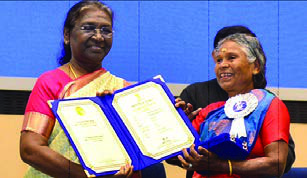<figcaption>Figure fig_ch03_p060_02 (Page 60)</figcaption></figure>
  <figure class="diagram-card" id="fig_ch03_p060_03"><figcaption>Figure fig_ch03_p060_03 (Page 60)</figcaption></figure>
  <figure class="diagram-card" id="fig_ch03_p060_04"><figcaption>Figure fig_ch03_p060_04 (Page 60)</figcaption></figure>
  <figure class="diagram-card" id="fig_ch03_p060_05">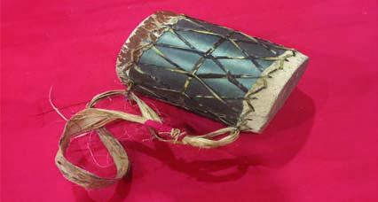<figcaption>Figure fig_ch03_p060_05 (Page 60)</figcaption></figure>
  <figure class="diagram-card" id="fig_ch03_p060_06">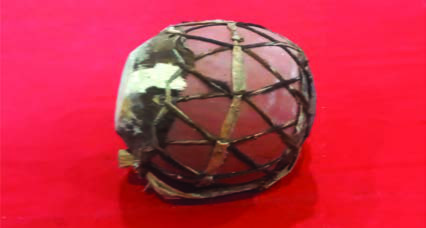<figcaption>Figure fig_ch03_p060_06 (Page 60)</figcaption></figure>
  <figure class="diagram-card" id="fig_ch03_p060_07">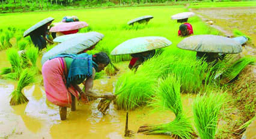<figcaption>Figure fig_ch03_p060_07 (Page 60)</figcaption></figure>
  <figure class="diagram-card" id="fig_ch03_p060_08"><figcaption>Figure fig_ch03_p060_08 (Page 60)</figcaption></figure>
  <figure class="diagram-card" id="fig_ch03_p060_09"><figcaption>Figure fig_ch03_p060_09 (Page 60)</figcaption></figure>
  <div class="page-content">
    <p>–šŒž—Dz”šȼc<br>‹šuc 1<br>60<br>VII<br>ˆšÚš}§z›Ƽ›¡eĞƀš}››¡gŽ‘<br>“›‹šuśƳ†›ųǫ †ĕ›ƣƩš›Žų<br>2020Ƴ ŽšzDZ¡Ĺ Œ›să uš›sƩǫ ¢„”œ<br>xă›ŅˆŽ–§sšŽc‹›ă‚§¢ušŅ“›‹šuśÆ<br>†›ų§ h ˆŽǗšŽc ¢†}ų f„DZ¡Ĺš‘š§<br>†ĕ›ƣ Ïs‘ښŠ–ŭ†¢Œ¡ ¡“u ¢“šs<br>ˆžĹ››¡ÚšÐ mų ‚}āų uš†Œš›Žų<br>†ĕ›ƣfˆ›ă‚§<br>gŦDZÄŽšȸˆ‚›ŝ­ˆ„›ŒÅŒ“›Æ<br>†›ų§¢„”œxă›Ņ ˆŽǗšŽc<br>†ĕ›ƣnǮ“šāų<br>x›Ņc4.10<br>†ĕ›ƣ<br>£““›…DZŒšÅų “š¢„DZšˆsŽādž›Åƣ›ă§iˆ¢šu›Úų‚›†ǫ ¢”•›c<br>e“ÅڝĬ§¢ušŅzœ“›‚“Œš›ŠŰ¡ƀĞx› x›ŅāÇNJŗ›Úž<br>¡ˆ¡<br>†šĞ›ˆ›<br>x›ŅāÇ4.11<br>‚}›<br>„“›Æ<br>–ǴŦc‹žŒ››¢Ŷǫg“Ž¡}e“sš”c“›„DZš‹DZš–š“–ŽāǪ¢ˆš•sš—šŽ‹DZ‚<br>f¢ŽšuDZ–cŽäc mų›“ iƀšÚų‚›†§ i‚sų ¢äŒˆŗ‚›s‘c<br>e†ŦŽ†}ˆ}›s‘c¢sů–cǙš†u“¡ĵźs‘¡}¢†Ķ‚ǴśƳ†}ų“Žų<br>¢ušŅz†‚¡} sš–DZǘšŽ›s zœ“›‚¡Ĺڝ›ă§s›ƀ§‚ƮššÚ›<br>㚖›Æe“‚Ž›ƀ›Ús<br>›cuˆ„“›Œš›ŠŰ¡ƀЧeŽ›s“Æڎc–c‹“›ăpŽ–šŒž—›s“›‹šuŒš§<br>ȻœsÇ</p>
  </div>
</section>
    </main>
    <footer>
      <div class="nav-bar"><a href="part_1_pages_2140.html">← Pages 21-40</a><a href="index.html">☰ Index</a><a href="part_1_pages_6180.html">Pages 61-80 →</a></div>
    </footer>
  </div>
</body>
</html>
